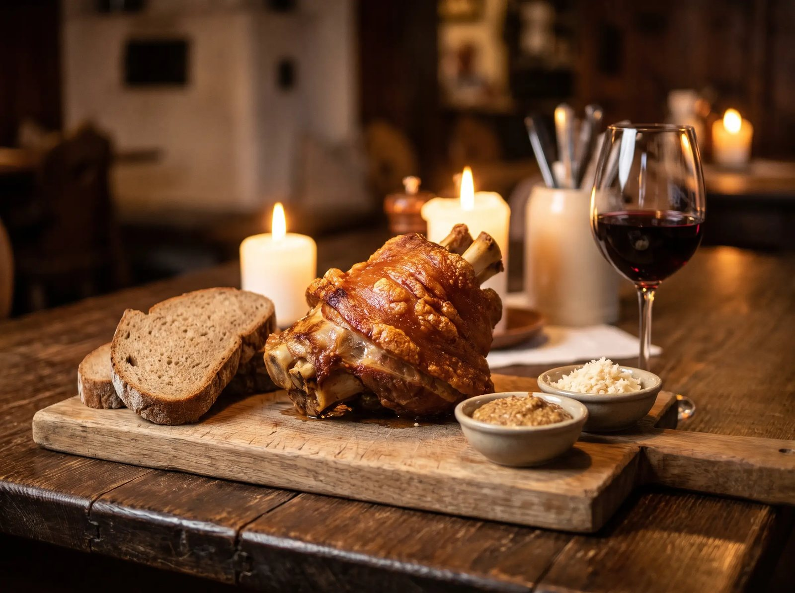
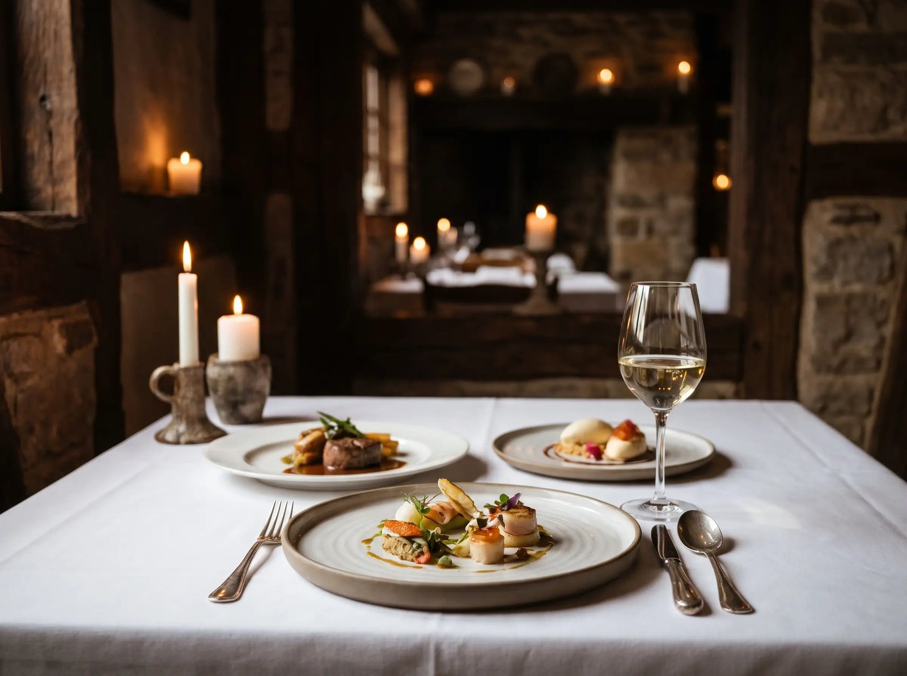

Bestellung bis 5. November
07.–08. November
Stelzen-Wochenende
Im Lokal oder zum Abholen, mit Senf, Kren, Krautsalat und Brot. Vorbestellung erforderlich.

Weinbau & Heuriger · Perchtoldsdorf
Eigener Weinkeller, Küche den ganzen Tag, Gastgarten unter den Reben. Mitten in Perchtoldsdorf, eine Viertelstunde von Wien.
Save the Date
Achtmal im Jahr stecken wir aus, jeweils rund drei Wochen.

07.–08. November
Im Lokal oder zum Abholen, mit Senf, Kren, Krautsalat und Brot. Vorbestellung erforderlich.

28. November
Kerzenschein, leise Musik, zwei 3-Gänge-Menüs zur Wahl. € 41 pro Menü.
Warum Neumayer
Fackeln für alle Gäste, dann gemeinsam in die Weingärten auf die Perchtoldsdorfer Heide. Oben wartet der Blick über Wien.
Vier Weine, je 80 ml, auf einem Brett. Die ehrlichste Art, unseren Keller kennenzulernen.
Rund 188 Tage im Jahr ist nicht ausg'steckt. Der Getränkeautomat im Eingang ist trotzdem immer zugänglich.
Speisen & Wein
Unsere Weine wachsen auf den Hängen über Perchtoldsdorf und werden im Haus ausgebaut. Dazu kommt, was die Jahreszeit hergibt.

Feiern
Zwei Ebenen, ein eigenes Stüberl, im Sommer der Gastgarten. Wir richten aus, wann und wie Sie möchten.
Sonnbergstraße 89
2380 Perchtoldsdorf
Mo–Sa 10:30–23:00
So 10:30–22:30